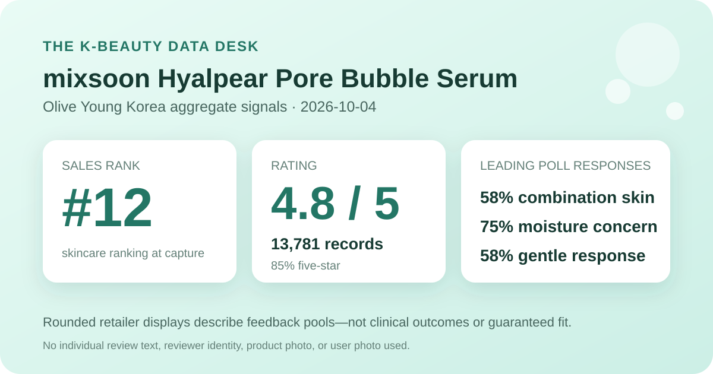
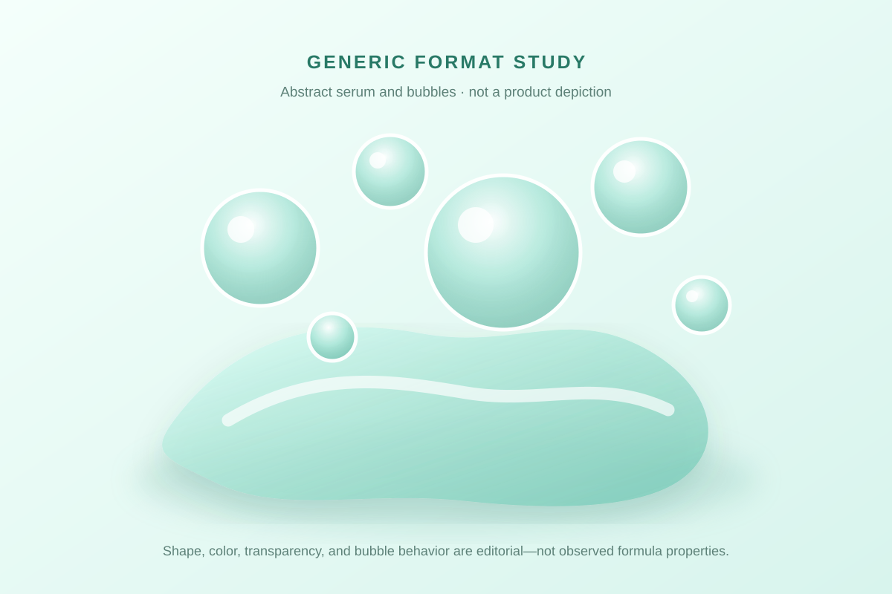

Data captured October 4, 2026. This is an independent analysis of retailer-displayed product information and anonymous aggregate review signals. I did not test the product, and no individual review, reviewer name, product photograph, or user photograph is copied, translated, paraphrased, or summarized.

The short version: mixsoon Hyalpear Pore Bubble Serum appeared at number 12 in Olive Young Korea's live skincare sales ranking. The product header and detailed review panel both displayed 4.8 out of 5 from 13,781 review records. Five-star selections accounted for 85% of the displayed distribution, while the largest shopper-poll responses were combination skin at 58%, moisture at 75%, and gentle at 58%. These are storefront signals, not proof of pore changes, deeper hydration, faster absorption, or personal suitability.
The distribution is strongly concentrated at five stars, but it is not unanimous. Sixteen percentage points are displayed outside the top category. The five rounded shares add to 101%, which is a useful reminder that the interface reports rounded percentages rather than an exact reconstruction of every rating. I do not force the values back to 100%, estimate hidden counts, or assign the extra point to a category.
The product header and full review view repeated the same 13,781-record total. That agreement reduces the risk of attaching the score to the wrong listing or a stale panel. It does not independently verify every buyer, disclose moderation and eligibility rules, or prove that every linked record concerns the same limited packaging and gift configuration.
Combination skin was the largest displayed response at 58%, followed by dry skin at 33% and oily skin at 8%. The rounded values total 99%. This poll describes who was represented among respondents to that interface question; it does not demonstrate that the serum works better for combination skin or that it is unsuitable for dry or oily skin.
The retailer did not display the poll denominator, selection rules, season, climate, full routines, concurrent actives, or how respondents defined their skin type. Those missing pieces matter. A large review base for the rating does not mean that all 13,781 people answered every poll, and the skin-type percentages should not be converted into imagined respondent counts.
The concern panel displayed moisture at 75%, soothing at 25%, and wrinkle/brightening at 0%. Moisture is therefore the dominant concern-selection label in this captured poll. It is not a measured increase in skin water content, a duration claim, proof of barrier repair, or evidence that the serum treats dehydration.
The irritation panel displayed 58% gentle, 42% ordinary, and 0% felt irritation. A majority selected the gentle response, but the ordinary response is substantial. More importantly, a rounded 0% in the last category cannot mean zero reaction risk. The interface does not standardize application amount, frequency, patch testing, allergies, damaged skin, prescriptions, recent procedures, or how shoppers interpreted the choices.

The listing identifies this as a 70 ml bubble serum. That supports only a broad leave-on serum classification and the fact that “bubble” is part of the displayed format language. I did not open, pump, dispense, spread, smell, wear, layer, or patch-test it. I cannot report bubble size, collapse time, slip, tack, residue, finish, scent, absorption, makeup behavior, or comparison with another serum.
The local visual is deliberately abstract. Translucent circles and a curved serum-like pool suggest a general bubble-serum concept without copying the product, package, character collaboration, campaign art, or user photographs. Its colors and shapes are editorial design choices, not observations about the real formula.
At capture, the page described a limited double promotion built around a 70 ml serum and a character-edition gift. It showed a ₩22,300 reference price and ₩18,600 promotional price. The page also carried delivery, gift, and live-viewer messaging. Pack contents, gifts, option prices, coupons, stock, and shipping can change, so this dated snapshot is not a promise about a future checkout.
Rank twelve means the listing held twelfth place in the retailer's selected skincare sales ranking at capture time. It does not mean twelfth-best serum, twelfth-most reviewed product, or twelfth-best choice for pores, moisture, combination skin, or sensitive skin. Promotions, bundles, availability, placement, and current demand can all affect sales rank.
The review view exposed individual text, profile labels, dates, and photographs. None is copied, translated, paraphrased, counted, or used as evidence in this article. A visible feed is selective and depends on sorting, so a few entries cannot establish how common any experience is. Restricting the analysis to the retailer's aggregate rating, star distribution, and displayed polls keeps the evidence auditable while respecting reviewers' content and identities.
No stable retailer-level anonymous theme summary was displayed during this capture. I therefore do not manufacture themes from the visible review feed or turn a few anecdotes into frequencies.
This capture did not independently reconcile a complete current ingredient list across every package or market. No ingredient identity, amount, concentration, stability, penetration, or compatibility is inferred from the product name, bubbles, rating, polls, rank, price, or category. “Hyalpear” is treated only as part of the displayed name, not as proof of a specific ingredient or dose.
No claim is made that the product is fragrance-free, alcohol-free, oil-free, non-comedogenic, hypoallergenic, pregnancy-compatible, procedure-compatible, or suitable for acne, rosacea, eczema, dermatitis, infection, broken skin, or another condition. Check the current authorized label for ingredients, directions, warnings, intended use, and storage. For a diagnosed condition, prescription routine, recent procedure, or history of significant reactions, seek qualified clinical or pharmacy advice.
The captured header and detailed review panel both displayed 4.8 out of 5 from 13,781 linked records. That is a favorable retail signal, not proof of a clinical effect or personal fit.
The interface showed 85% five-star, 10% four-star, 4% three-star, 1% two-star, and 1% one-star selections. The displayed rounded values total 101%.
No. It is a concern-selection share in a shopper poll. The capture did not include a controlled hydration measure, baseline, comparator, duration, or clinical assessment.
No. That rounded response describes the displayed poll pool and cannot predict allergies, sensitivities, interactions, underlying conditions, or individual tolerance.
No. It is a local, brand-neutral vector visual for a general bubble-serum concept and does not represent the real product or formula.
Source: Olive Young Korea product listing for the mixsoon Hyalpear Pore Bubble Serum 70 ml limited double set, accessed October 4, 2026. The source is a dynamic retail page; rank, price, availability, gifts, counts, percentages, and linked configurations can change after capture.
This independent article is unaffiliated with mixsoon or Olive Young. The store link contains no affiliate tracking identifier, and this site earns no commission from it.
← Back to all posts · Review-volume rankings · Skin-poll representation · Methodology